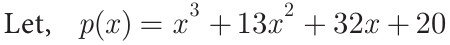
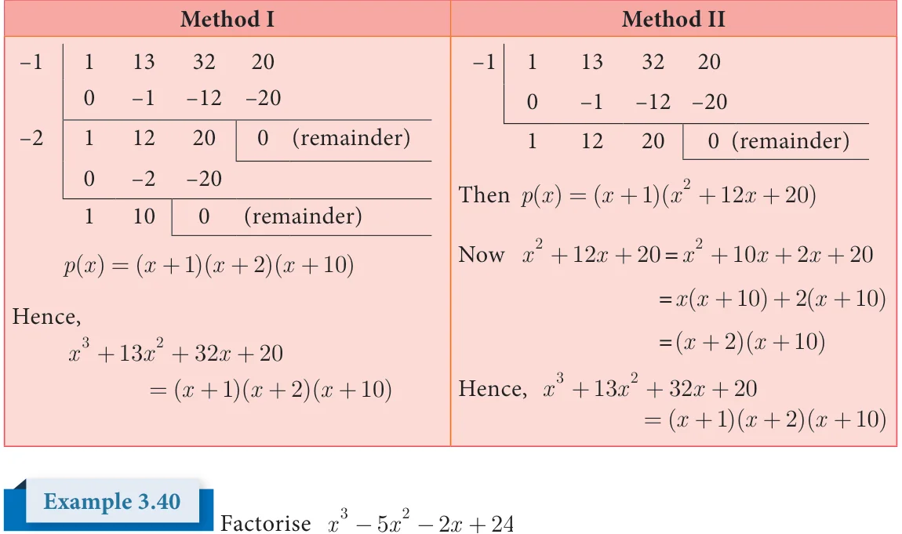

In this section, we use the synthetic division method that helps to factorise a cubic polynomial into linear factors. If we identify one linear factor of cubic polynomial p(x) then using synthetic division we can get the quadratic factor of p(x). Further if possible one can factorise the quadratic factor into linear factors.
Note
z For any non constant polynomial p(x), \(x = a\) is zero if and only if p(a) \(= 0 z x - a\) is a factor for p(x) if and only if p(a) \(= 0\) (Factor theorem) To identify (x \(- 1)\) and (x \(+ 1)\) are the factors of a polynomial z (x \(- 1)\) is a factor of p(x) if and only if the sum of coefficients of p(x) is 0. z (x+1) is a factor of p(x) if and only if the sum of the coefficients of even power of x, including constant is equal to the sum of the coefficients of odd powers of x
Example 3.38 _{3} _{2}
- (i)Prove that (x -1) is a factor of \(x - 7x +13x - 7\)
- (ii)Prove that (x +1) is a factor of \(x + 7x +13x + 7\)
Solution
- (i)Let p(x) \(= x - 7x +13x - 7\)
Sum of coefficients \(= 1 - 7 +13 - 7 = 0\) Thus (x -1) is a factor of p(x)
- (ii)Let q(x) \(= x + 7x +13x + 7\)
Sum of coefficients of even powers of x and constant term \(= 7 + 7 = 14\) Sum of coefficients of odd powers of \(x = 1 + 13 = 14\) Hence, (x +1)is a factor of q(x)
Factorise \(+ + +\) into linear factors.
Solution

Let, ( ) \(= + + +\) Sum of all the coefficients= \(+ + + = \ne\)
Hence, (x -1) is not a factor.
Sum of coefficients of even powers and constant term \(= 13 + 20 = 33\)
Sum of coefficients of odd powers \(= 1 + 32 = 33\)
Hence, (x +1) is a factor of p(x)
Now we use synthetic division to find the other factors

Solution
Let ( ) \(= - - +\) When \(x = 1,p( )= - - + = \ne\) (x -1)is not a factor. When \(x = - 1\), p(- \()= - - + + = \ne\) (x +1) is not a factor. Therefore, we have to search for different values of x by trial and error method. When =
( ) \(= - 5 2(\) ) \(- 2 2( )+\)
\(= - - + = 8 ^{1} 0\) Hence, (x \(- 2)\) is not a factor

When \(x = - 2\)
p(-2)= ( \(- 2) - 5( - 2) - 2( - 2)+ 24\)
\(= - - 8 20 + 4 + 24\)
\(p(-2) = 0\)
Hence, (x+2) is a factor
\(- 2 1 - 5 - 2 24\)
\(0 - 2 +14 - 24\)
\(3 1 - 7 12 0\) (remainder) \(0 3 - 12 1 - 4\) (remainder) Thus, (x \(+ 2)(x \frac{0}{ - 3)(x -\) } 4) are the factors.
Therefore, \(x - 5x - 2x + 24 =\) (x \(+ 2)(x - 3)(x - 4)\)